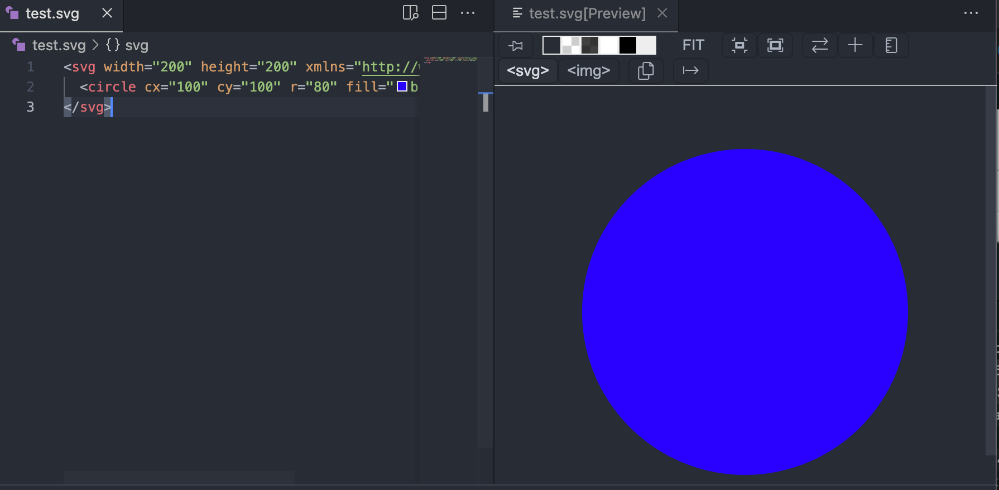

SVG 基本構文
SVG ドキュメントは、1 つ以上の SVG 要素で構成され、これらがグラフィックのコンテンツと属性を定義します。
<svg width="200" <!-- 指定SVG画布的宽度 --> height="200" <!-- 指定SVG画布的高度 --> xmlns="http://www.w3.org/2000/svg"> <!-- 指定SVG命名空间 --> <!-- SVG图形内容 --> </svg>
width和height属性は SVG キャンバスの幅と高さを定義します。xmlns属性は SVG ドキュメントの XML 名前空間を指定します。
SVG の基本構文：
SVG ドキュメントは
<svg>タグで始まり、</svg>タグで終わります。SVG 要素はタグを使用してさまざまな図形を記述します。たとえば、
<circle>円を表し、<rect>矩形などを表します。SVG 要素には属性を含めることができ、位置、サイズ、色など、図形のさまざまな特性を指定するために使用されます。
基本図形の描画：
SVG は、矩形、円、直線、多角形など、さまざまな形状の図形を描画するための一連のグラフィック要素を提供します。
<rect>：矩形を描画します<circle>：円を描画します<ellipse>：楕円を描画します<line>：直線を描画します<polyline>：ポリラインを描画します<polygon>：多角形を描画します<path>：パスを描画します
矩形（Rectangles）：<rect> 要素を使用して矩形を描画します。矩形の位置、サイズ、角丸などの属性を指定できます。
<rect x="50" y="50" width="100" height="50" rx="10" ry="10" fill="blue" />
円（Circles）：<circle> 要素を使用して円を描画します。円の中心座標と半径を指定できます。
<circle cx="100" cy="100" r="50" fill="red" />
楕円（Ellipses）：<ellipse> 要素を使用して楕円を描画します。楕円の中心座標と長軸・短軸の半径を指定できます。
<ellipse cx="100" cy="100" rx="80" ry="50" fill="green" />
直線（Lines）：<line> 要素を使用して直線を描画します。始点と終点の座標を指定する必要があります。
<line x1="50" y1="50" x2="150" y2="150" stroke="black" stroke-width="2" />
多角形（Polygons）：<polygon> 要素を使用して多角形を描画します。複数の頂点の座標を指定する必要があります。
<polygon points="100,50 150,150 50,150" fill="orange" />
ポリライン（Polylines）：<polyline> 要素を使用してポリラインを描画します。複数の点の座標を指定する必要があります。
<polyline points="100,50 150,150 50,150" fill="none" stroke="blue" stroke-width="2" />
パス（Paths）：<path> 要素を使用してパスを描画します。一連のパスコマンドを指定することで、さまざまな形状を描画できます。
<path d="M10 10 L90 10 L90 90 Z" fill="none" stroke="black" stroke-width="2" />
グラデーションと塗りつぶし：
使用
<linearGradient>或<radialGradient>グラデーションを定義します。使用
fill和stroke属性は塗りつぶしとストロークのスタイルを指定します。
テキストとフォント：
使用
<text>要素はテキストを挿入します。使用
font-family、font-sizeなどの属性はテキストスタイルを制御します。
アニメーションとインタラクション：
CSS または JavaScript を使用してアニメーション効果を作成します。
イベントハンドラを追加して、マウスクリックやホバーなどのインタラクション機能を実装します。
SVG 要素の属性：
SVG 要素はさまざまな属性を持つことができ、図形の位置、サイズ、色などの特性を指定するために使用されます。
<circle cx="100" <!-- 圆心的x坐标 --> cy="100" <!-- 圆心的y坐标 --> r="50" <!-- 圆的半径 --> fill="red" <!-- 填充颜色 --> stroke="black" <!-- 描边颜色 --> stroke-width="2" <!-- 描边宽度 --> />
cx和cy属性は円の中心の x 座標と y 座標を定義します。r属性は円の半径を定義します。fill属性は塗りつぶしの色を定義します。stroke属性はストロークの色を定義します。stroke-width属性はストロークの幅を定義します。
ネストとグループ化：
SVG 要素はネストおよびグループ化でき、グラフィック要素をより適切に整理および管理できます。
<g id="group1"> <!-- 定义一个分组 --> <!-- 分组内的图形元素 --> <rect x="10" y="10" width="50" height="50" /> <circle cx="100" cy="100" r="30" /> </g>
<g>要素はグループを作成するために使用されます。id属性はグループに一意の識別子を指定するために使用されます。
簡単な SVG の例
SVG ファイルでは.svg（すべて小文字）をこの種のファイルの拡張子として使用することをお勧めします。
1. 以下は簡単な SVG ファイルの例で、円を 1 つ含む SVG 画像を作成します：
test.svg ファイル
<circle cx="100" cy="100" r="80" fill="blue" />
</svg>
このコードは、幅 200 単位、高さ 200 単位の SVG キャンバスを記述しています。キャンバス上に円が 1 つ描画されており、円の中心座標は (100, 100)、半径は 80 単位、塗りつぶしの色は青です。
プレビュー結果：

2. もう 1 つの簡単な SVG 図形の例：
test.svg ファイル
baseProfile="full"
width="300" height="200"
xmlns="http://www.w3.org/2000/svg">
<rect width="100%" height="100%" stroke="red" stroke-width="4" fill="yellow" />
<circle cx="150" cy="100" r="80" fill="green" />
<text x="150" y="115" font-size="16" text-anchor="middle" fill="white">RUNOOB SVG TEST</text>
</svg>
試してみる »
結果は次のように表示されます：
SVG コードの解説：
-
<svg version="1.1" baseProfile="full" width="300" height="200" xmlns="http://www.w3.org/2000/svg">：これは SVG ドキュメントの開始タグで、SVG のバージョン、基本構成（full）、およびキャンバスの幅と高さを指定しています。xmlns 属性は SVG ドキュメントの XML 名前空間を定義します。 -
<rect width="100%" height="100%" stroke="red" stroke-width="4" fill="yellow" />：これは矩形要素で、<rect>タグを使用して表されます。その幅と高さはどちらもキャンバスの幅と高さ（100%）に設定されています。stroke 属性は矩形の枠線の色を赤に指定し、stroke-width 属性は枠線の幅を 4 単位に設定し、fill 属性は矩形の塗りつぶしの色を黄色に指定します。 -
<circle cx="150" cy="100" r="80" fill="green" />：これは円要素で、<circle>タグを使用して表されます。その円の中心座標 (cx, cy) は (150, 100) で、半径 r は 80 単位です。fill 属性は円の塗りつぶしの色を緑に指定します。 -
<text x="150" y="115" font-size="16" text-anchor="middle" fill="white">RUNOOB SVG TEST</text>：これはテキスト要素で、<text>タグを使用して表されます。その開始座標 (x, y) は (150, 115) で、font-size 属性はフォントサイズを 16 単位に設定し、text-anchor 属性はテキストの水平方向の配置を中央に設定し、fill 属性はテキストの色を白に指定します。テキストの内容は "RUNOOB SVG TEST" です。 -
</svg>：これは SVG ドキュメントの終了タグで、SVG ドキュメントの終わりを示します。
クリックしてノートを共有
<p style="font-size:14px;">ノートは本記事の内容を拡張したものである必要があります！</p><br> <p style="font-size:12px;"><a href="../tougao.html" target="_blank">記事投稿はここをクリック</a></p> <p style="font-size:14px;"><a href="../w3cnote/runoob-user-test-intro.html" target="_blank">登録招待コードの取得方法</a></p> <h3 class="text-muted"><i class="fa fa-info-circle" aria-hidden="true"></i> ノートを共有する前に<a href=";.html" class="runoob-pop">ログイン</a>が必要です！</h3> <p><a href="../w3cnote/runoob-user-test-intro.html" target="_blank">登録招待コードの取得方法</a></p>